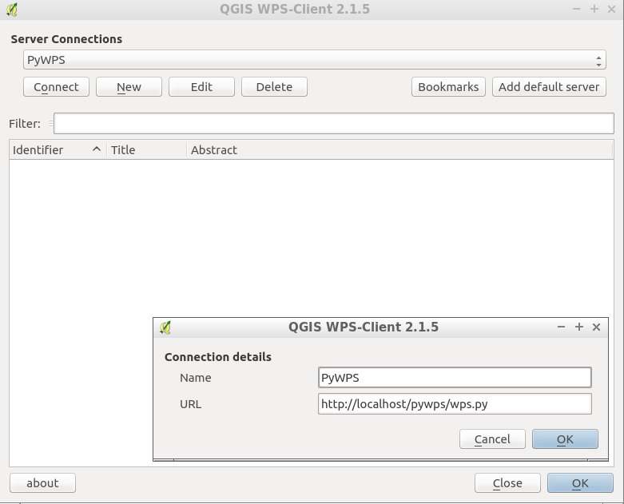

PyWPS¶
Web Processing Service¶
A PyWPS webes hozzáférést biztosít az egyedi térinformatikai műveletekhez (a továbbiakban: feldolgozás) a Web Processing Service (WPS) szabványos szolgáltatáson keresztül.
A feldolgozásokat Python programnyelven készítették és olyan eszközökbe integrálható mint a GRASS GIS, R, GDAL/OGR, proj és további Python kötésekkel bíró más könyvtárakkal. A forrás adatokról WPS kérésekkel gondoskodhatunk vagy a WPS szerverről érhetők el.


Alapfunkciók¶
kicsi és könnyűsúlyú
könnyen és gyorsan telepíthető és beállítható
teljesen Pythonban implementálták
tökéletesen illeszkedik a Python csomagok ökoszisztémájához:
GRASS 7
R
GDAL/OGR
Proj
Numpy
Shapely
Implementált szabványok¶
OGC szabványok:
WPS 1.0.0
Részletek¶
Honlap: https://pywps.org/
Licenc: GPL
Szoftver verzió: 4.5.1
Támogatott platformok: Windows, Linux, Mac
API interfészek: Python
Támogatás: https://pywps.org/community/#professional-support